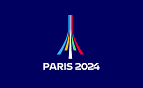
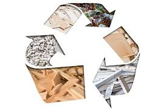
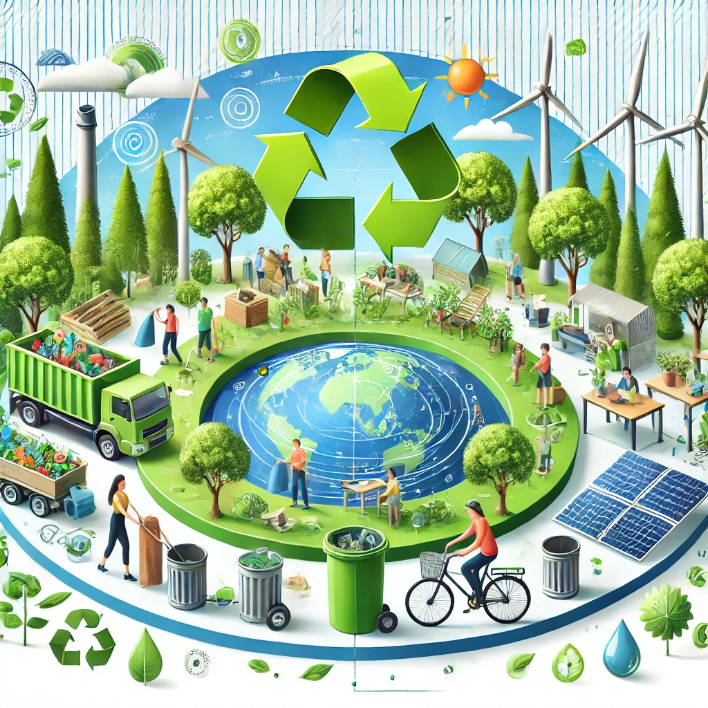

Introduction
Les Jeux Olympiques de Paris 2024 se positionnent comme un modèle de durabilité environnementale, adoptant des pratiques pionnières en matière de gestion des ressources et d'économie circulaire. L'objectif est de créer un événement respectueux de l'environnement tout en sensibilisant les spectateurs à des comportements plus durables.
Gestion des Déchets
Les Jeux Olympiques de Paris 2024 adoptent une approche innovante pour réduire l'empreinte écologique des déchets générés pendant l'événement :
- Réduction des Déchets à la Source : Suppression des plastiques à usage unique au profit de fontaines d'eau et d'ustensiles réutilisables.
- Centres de Tri : Des installations spécifiques permettent de trier et valoriser les matières recyclables directement sur les sites.
- Compostage : Les déchets alimentaires sont collectés séparément pour être transformés en compost utilisable localement.
Ces initiatives visent à valoriser 90 % des déchets générés pendant les Jeux.

Utilisation de Matériaux Recyclés
La construction et l'organisation des Jeux mettent en avant des matériaux recyclés et réutilisables pour minimiser l'empreinte écologique :
- Structures Temporaires : Construites à partir de matériaux modulaires, elles sont démontées et réutilisées après les Jeux.
- Béton Recyclé : Utilisé pour les infrastructures, il permet de réduire la consommation de nouvelles ressources.
- Équipements Écoresponsables : Mobilier, signalétiques et autres installations sont fabriqués à partir de matériaux recyclés.
Ces choix mettent en avant une économie circulaire locale, réduisant les émissions associées à la fabrication et au transport.
Sensibilisation à l'Économie Circulaire
Les Jeux Olympiques de Paris 2024 ne se contentent pas d'adopter des pratiques durables, ils visent également à inspirer un changement chez les spectateurs et les citoyens :
- Stands Éducatifs : Des espaces dédiés expliquent l'économie circulaire et son importance.
- Ateliers Pratiques : Fabrication d'objets à partir de matériaux recyclés, compostage à domicile, et autres pratiques durables.
- Campagnes Visuelles : Des messages diffusés sur les écrans des sites encouragent à trier et à réduire les déchets.
- Partenariats Locaux : Collaboration avec des écoles et associations pour promouvoir la durabilité au-delà des Jeux.
Ces initiatives visent à laisser un héritage éducatif durable, encourageant des comportements respectueux de l'environnement.
